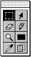
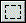
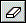
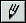
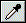
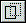

★Graphic Tools Guide
★MAP/SCREENエディタユーザーズマニュアル
★Graphic Tools Guide
★MAP/SCREENエディタユーザーズマニュアル
 | ||
長方形選択ツール |
選択ツール | |
消しゴムツール |
鉛筆ツール | |
虫眼鏡ツール |
長方形ツール | |
スポイトツール |
ドラッグドロップツール |

長方形選択ツール
| ドラッグ： | 長方形で範囲を選択します。 |
| Shift+ドラッグ： | 指定範囲を選択範囲に追加します。 |
| アップル+ドラッグ： | 指定範囲を選択範囲から削除します。 |
| Shift+アップル+ドラッグ： | 指定範囲と選択範囲の共通領域を選択します。 |
| クリック： | 選択範囲を解除します。 |
| ドラッグ： | 選択範囲のデータを移動します。 |
| Option+ドラッグ： | 選択範囲のデータを複写後、移動します。 |
| クリック： | 選択範囲を解除します。 |
| クリック： | 指定キャラクタを選択範囲にします。 |
| Shift+クリック： | 指定キャラクタを選択範囲に追加します。 |
| アップル+クリック： | 指定キャラクタを選択範囲から削除します。 |
| Shift+アップル+クリック： | 指定キャラクタと選択範囲の共通領域を選択します。 |
| ドラッグ： | 選択範囲のデータを移動します。 |
| Option+ドラッグ： | 選択範囲のデータを複写後、移動します。 |
| クリック： | 選択範囲を解除します。 |

消しゴムツール
| ドラッグ： | 消去データで描画します。 |
| ダブルクリック： | 選択範囲のデータを消去します。 |

鉛筆ツール
| ドラッグ： | 指定データで描画します。 |
| Option+クリック： | クリック位置のデータを指定します。 |
| クリック： | 2倍拡大表示します。 |
| Option+クリック： | 1/2倍縮小表示します。 |
| ドラッグ： | 指定データで長方形領域を描画します。 |
| Option+クリック： | クリック位置のデータを指定します。 |

スポイトツール
| クリック： | クリック位置のデータを指定します。 |

ドラッグドロップツール
★Graphic Tools Guide
★MAP/SCREENエディタユーザーズマニュアル